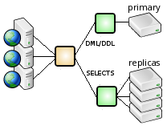

Contents
Contents  singlestep | SQL Relay Configuration Guide | regex
singlestep | SQL Relay Configuration Guide | regex 
Query and Session Routing
Query routing enables the SQL Relay server to send one set of queries to one database, another set of queries to another, another set of queries to another, and so on.
Session routing sends entire sessions to one database or another; by user, by intercepting "use database" queries, by client ip address, or by other criteria.
To route queries or sessions, one instance of SQL Relay must be configured as a router to route queries to other instances of SQL Relay which are configured normally.
A typical use case is to configure one instance of SQL Relay to maintain connections to a master database and another instance of SQL Relay to maintain connections to a pool of slaves, then set up a third instance of SQL Relay to route queries to the other 2 instances.

This is such a common case, that it is also described in it's own section: Master-Slave Query Routing.
There are other possiblities as well though.
The actual routing itself is implemented by loadable modules. The routers section of the configuration file indicates which router modules to load and what parameters to use when executing them.
<?xml version="1.0"?>
<instances>
<instance ... dbase="router" ...>
...
<routers>
<router module="regex" connectionid="master">
<pattern pattern="^drop "/>
<pattern pattern="^create "/>
<pattern pattern="^insert "/>
<pattern pattern="^update "/>
<pattern pattern="^delete "/>
</router>
<router module="regex" connectionid="slave">
<pattern pattern=".*"/>
</router>
</routers>
<connections>
<connection connectionid="master" string="..."/>
<connection connectionid="slave" string="..."/>
</connections>
...
</instance>
</instances>
The module attribute specifies which module to load.
Module configurations may have attributes and/or nested tags. How these elements are interpreted is module-specific.
All router modules have an enabled attribute, allowing the module to be temporarily disabled. If enabled="no" is configured, then the module is disabled. If set to any other value, or omitted, then the module is enabled.
Router modules can be "stacked". Multiple modules may be loaded and multiple instances of the same type of module, with different configurations, may also be loaded.
In fact, the example above shows a stacked configuration. The first instance of the router module sends DDL/DML queries to a "master" database and the second instance of the router module sends all other queries to a "slave" database.
At startup, the SQL Relay server creates instances of the specified router modules and initializes them. When the client sends a query to the SQL Relay server, the server consults each router module, in the order that they were specified in the config file. Each module applies its routing rules to determine which connection to run the query on. If a module returns a connection then the remaining modules are ignored. If the query makes it through all modules without being routed to a particular connection, then the query is ignored.
Currently, the following router modules are available in the standard SQL Relay distribution, grouped by whether they route individual queries or entire sessions:
Query Routing Modules
Session Routing Modules
Custom modules may also be developed. For more information, please contact dev@firstworks.com.
Quirks and Limitations
Stored Procedures
It's possible to use stored procedures with SQL Relay's query routing feature. However, since stored procedures are run on the database, SQL Relay can't route the individual queries run inside the stored procedure. So, the stored procedure and all queries run inside of it will be run against whichever database it was routed to.
Metadata/Catalog Introspection
A router-backed instance doesn't support listing catalogs, schemas, tables, columns, procedures, keys or indexes. Clients that try (eg. sqlrsh's "describe" command, or ODBC and JDBC metadata calls) get a "not implemented" error.
A router-backed instance also doesn't report some database-specific features to clients, since they depend on which database each query is routed to.
Parallel Transactions
Router modules like userlist, clientiplist, and clientinfolist route entire sessions to one database or another. Router modules like regex route individual queries. Behind the scenes, modules which route individual queries maintain parallel transactions on each of the databases that it is routing queries to, which present the following issues.
usedatabase behaves like session routing in practice - once a client selects a database, its queries keep going to that connection - but it doesn't route entire sessions from the moment a client connects the way userlist, clientiplist and clientinfolist do. Before the client selects a database, its queries are still subject to the parallel-transaction behavior and integrity-violation checks described below.
Integrity Violations
When the client issues a begin, commit or rollback, the router issues a begin, commit or rollback to each of the databases. Similarly, if the client turns auto-commit on or off, the router turns auto-commit on or off on each of the databases.
Some of these commands could succeed on some databases and fail on others. SQL Relay doesn't support two-phase commit, so when this happens, it returns an error, disables the instance doing the routing, and raises an integrity_violation event, which can be used to notify a DBA (see Notifications). The DBA must then resolve the problem manually and restart SQL Relay.
Transaction Model
Since queries may be routed to different kinds of databases, the router has to employ some tricks to maintain parallel transactions if the databases implement different transaction models. This may require some unintuitive "begin" queries. For example, if your client application is using a router which routes queries over both PostgreSQL and Oracle databases, then since PostgreSQL requires "begin" queries, you must use a "begin" query to start a transaction, even if your app only intends to send queries which would be run against Oracle.